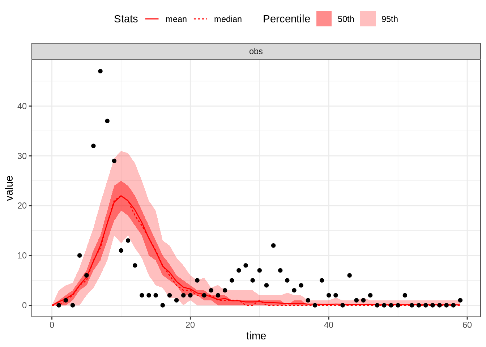
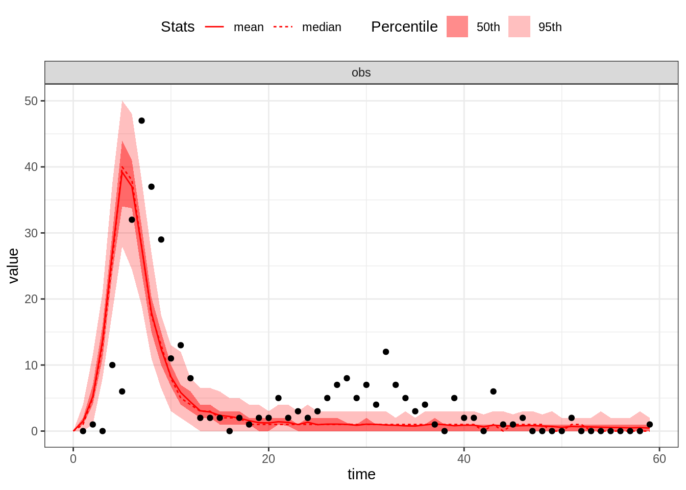
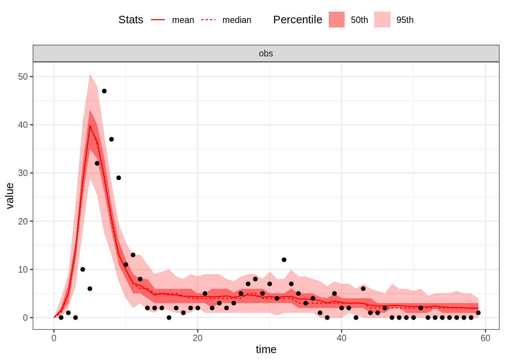
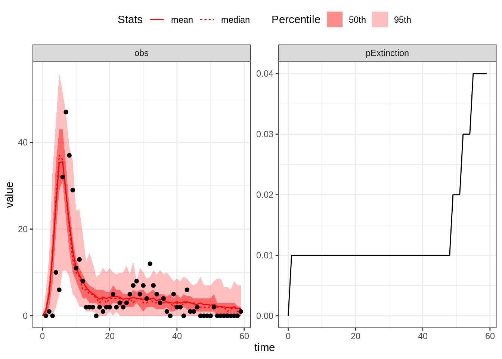
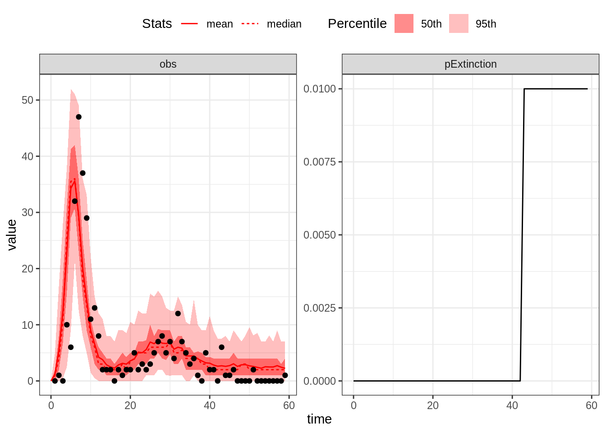

Based on the description of the outbreak above and the information found in the literature we can make the following guess estimates:
Now, you can now go back to the practical and check whether these estimates provides a good fit to the data.
Let’s simulate the SEITL model with our initial guess theta:
thetaGuess1 <- c(R_0 = 4, D_lat = 2, D_inf = 2, alpha = 0.7, D_imm = 13, rho = 0.7)
initStateGuess <- c(S = 279, E = 0, I = 2, T = 3, L = 0, Inc = 0)
plotFit(seitlDeter, thetaGuess1, initStateGuess, data = fluTdc1971, nReplicates = 100)
This set of parameters provides a poor fit, in particular the first wave too small. Let’s increase \(R_0\):
thetaGuess2 <- c(R_0 = 10, D_lat = 2, D_inf = 2, alpha = 0.7, D_imm = 13, rho = 0.7)
plotFit(seitlDeter, thetaGuess2, initStateGuess, data = fluTdc1971, nReplicates = 100)
The size of the first wave is now ok but the second wave is too small. Let’s decrease \(\alpha\), thus allowing more islanders to be reinfected:
thetaGuess3 <- c(R_0 = 10, D_lat = 2, D_inf = 2, alpha = 0.4, D_imm = 13, rho = 0.7)
plotFit(seitlDeter, thetaGuess3, initStateGuess, data = fluTdc1971, nReplicates = 100)
This is a decent eyeball fit given that we have 6 parameters. However, we note that many data point are not captured by the model, even accounting for variability of the observation process.
Now, you can now go back to the practical and check whether the stochastic model provides a better fit to the data.
Let’s try the stochastic SEITL model with our best guess from the previous section.
plotFit(seitlStoch, thetaGuess3, initStateGuess, data = fluTdc1971, nReplicates = 100,
nonExtinct = c("E", "I"))
The stochastic model better accounts for the variability in the data. In addition, demographic stochasticity can lead to stochastic extinctions at the beginning and at the end of the outbreak when the number of infectious individuals is low and the chain of transmission can break if by chance they recover before infecting a secondary case. By contrast, the cumulative extinction probability doesn’t increase between the two waves, despite the low incidence observed in the data. Note however that the shape of the second wave is quite flat in comparison to the data.
Now, you can now go back to the practical and check how we can make this model a bit more realistic.
Let’s simulate the stochastic SEIT4L model with our last guess estimates. Note that we need to change the vector of initial states.
initStateGuessSEIT4L <- c(S = 279, E = 0, I = 2, T1 = 3, T2 = 0, T3 = 0, T4 = 0,
L = 0, Inc = 0)
plotFit(seit4lStoch, thetaGuess3, initStateGuessSEIT4L, data = fluTdc1971, nReplicates = 100,
nonExtinct = c("E", "I"))
With the SEIT4L model the shape of the second epidemic wave is better captured. To explain this, we first note that for the same expected duration, the Erlang distribution with shape \(k\) has a variance \(k\) times smaller than that of the exponential distribution. Accordingly, recovered individuals stay temporarily protected for similar durations. Consequently, those who do not develop long-term protection go back to the susceptible compartment approximately at the same time. This sudden inflow of susceptible individuals can initiate a bigger second wave.
You’ve already finished? Why not go further?
This web site and the material contained in it were originally created in support of an annual short course on Model Fitting and Inference for Infectious Disease Dynamics at the London School of Hygiene & Tropical Medicine. All material is under a MIT license. Please report any issues or suggestions for improvement on the corresponding GitHub issue tracker. We are always keen to hear about any uses of the material here, so please do get in touch using the Discussion board if you have any questions or ideas, or if you find the material here useful or use it in your own teaching.